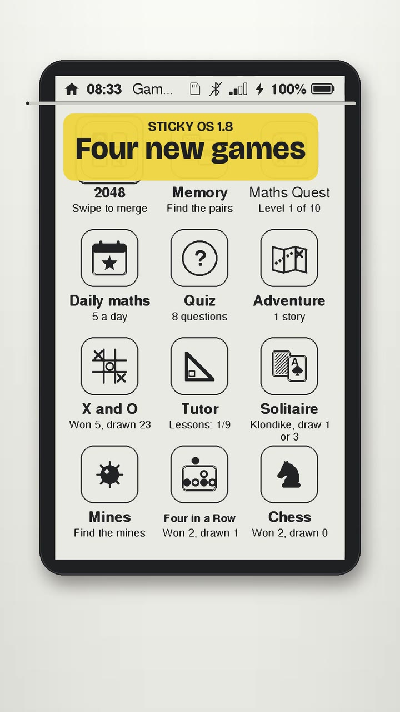

Blog ·
{{NAME}} 1.8: Solitaire, Mines, Four in a Row and Chess
The Games folder now holds twelve. {{NAME}} 1.8 adds Solitaire, Mines, Four in a Row and Chess, played by tap on the e-paper screen, upright or sideways. It also shows the battery’s real figures and draws the screen faster.



Watch · 0:33
Four new games in 33 seconds
- Solitaire: tap a card, then where it goes
- Mines: dig to open the field, then flag the mines
- Four in a Row against the board, and a win
- Chess full screen: a move, and the board’s reply
- The Menu, and the board held sideways
Filmed from the board’s own screens. It opens on YouTube; nothing from YouTube loads on this page.
Solitaire
Klondike, played by tap. Tap a card and it goes to its foundation, or to the only column it fits. When there is more than one place, it is picked up (drawn black) and the next tap says where. Tap the stock to turn a card, or three: draw 1 or draw 3 is chosen on the New game card. Undo takes back a move at a time, and once every card is face up the game plays itself out.
Mines
Three sizes: small is 8 × 10, medium 9 × 12 and large 10 × 13. The first square you dig is always safe and opens a patch. The Dig / Flag switch says what a tap does, and a number that already has its flags around it opens the rest. The counter shows the mines left, and the clock times the game.


Four in a Row
Against the board, at three levels: Easy, Medium and Hard. Your discs are rings and the board’s are solid; the last disc played has a dot, and the winning four are struck through. You take turns to start, a game each. The board replies at once, and keeps your wins, draws and losses.
Chess
You play White against the board. The board fills the screen: tap a piece and its moves show as dots, its captures as corners; tap one to move. The board then thinks, about a second at most on Hard, and plays its reply. Menu opens a panel with Back, the three levels, your tally, Undo and Resign, and closes again; it also closes by itself when you move. Held sideways, the board sits on the left with the Menu beside it.


Where the rules come from
The rules of all four come from CrossPlay by Mario Ruiz, MIT licensed, copied unchanged; the screens and the taps are {{NAME}}’s own. CrossPlay’s own tests, about 6.3 million checks, run on GitHub for every change. The chess pieces are Maurizio Monge’s “celtic” set, also MIT. The games’ words are in all ten of the board’s languages.
Also in 1.8
- Real battery figures. About, quick settings and telemetry showed current and capacity ten times too high: a 750 mAh battery read 7500 mAh. They are right now.
- Faster screen updates. A partial refresh takes about 540 ms instead of 600.
- Tidier deep sleep. The screen’s and the microphone’s lines are held off while the board sleeps.
- Newer boards (with the SSD2677 screen) pick their refresh waveforms for the room’s temperature.
Get it
{{NAME}} 1.8 is on GitHub Releases. On a board running {{NAME}}, open Settings → Software update, tap Check now, then Install. To install it the first time, see Install. The new games are in the Games folder; Settings → Home screen can hide any of them.